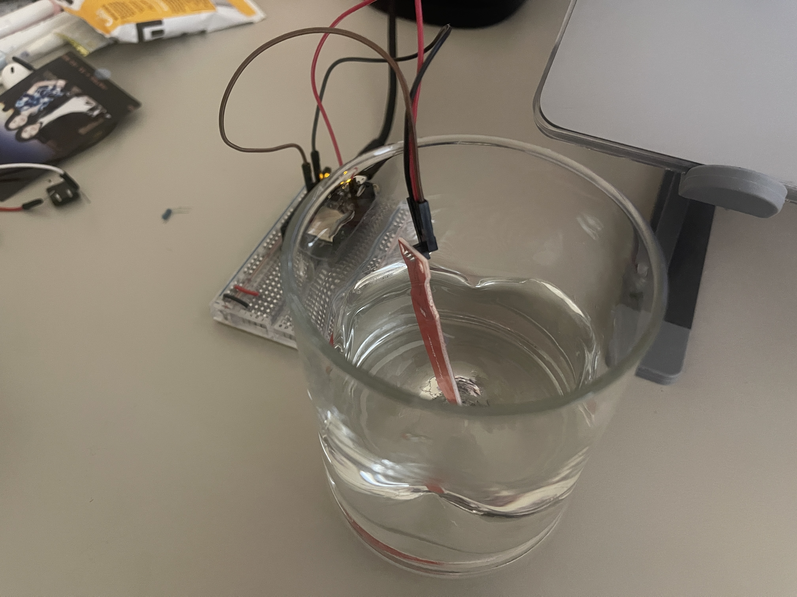
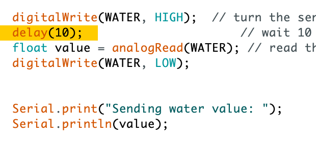
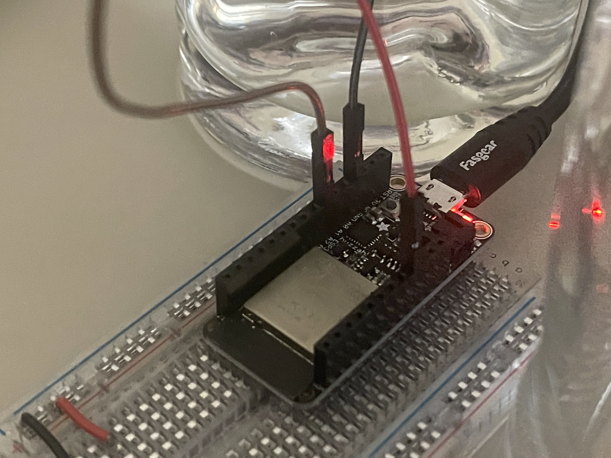
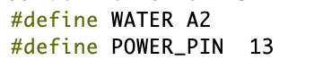
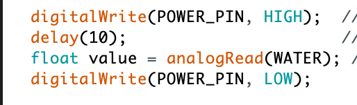
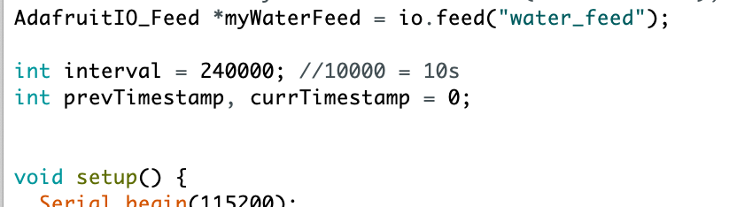
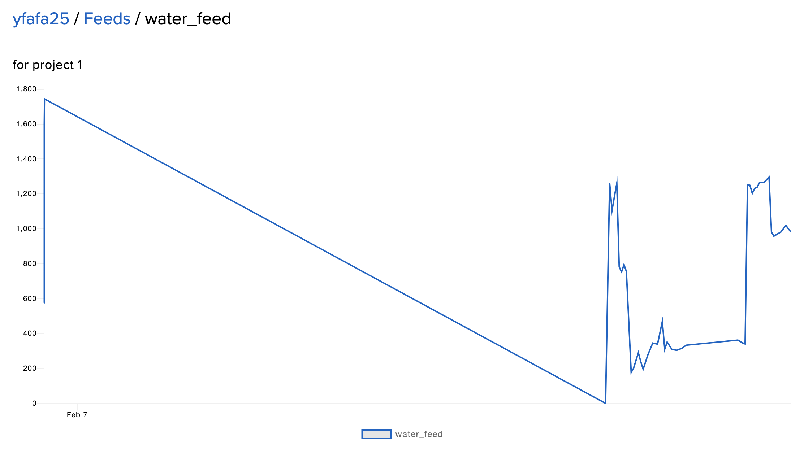

The data I was trying to collect was how many water I drink everyday, like a way to stimulate myself to drink more water. So I used a water level sensor to detect how many water was left during a period of time
Putting a metal piece in my cup is not that acceptable for me due to the sanitary problem. So I decided to use another cup as a representation.
Therefore, the data collection method (physically): everytime I drink some water, I will pour some water out of the glass to maintain the same water level with the cup I used to drink.

I tested the connection and the feasibility to collect accurate data first. The first problem was that there will always be two lines of errors occured in the Serial monitor.
I turned to Maxim and checked the documentation again, found out the power pin (digital INPUT) should be different from the analog water level sensor pin (analog OUTPUT).
So I adjusted the code as well as the esp32 connection:
  
I also changed the interval to 240000 milliseconds (4 minutes). So that the data collection is more accurate and authentic in terms of a daily habit
and then I started to collect data!
...wait for a long long time...

Here is the data I collected. I will mainly focus on the relatively latest part of the data set. The great shrink that shown in the screenshot is due to the connection error (I first miss typed the wrong pin number in Arduino) and the interval for data collecting at that time was short.
2. Visualization with p5.js
I fetched 20 data points at one time and put them into 20 lines, representing different amount of water I drank in different moments.
At first, the data kept being pushed into the array, which made a bunch of lines as time goes by. The visual was pretty good, since it offered some changes, but my laptop started to slow down.
3. OutcomeTherefore, I empty the array once the data was fetched to keep the array clean. Although it looked plain and dull without any changes, once the data was fetched in real-time (to say, the sensor was kept detecting and uploading data), there would be some slight changes to the dataset as well as the visual
link to my p5.js4. Reflection
It is hard to keep the data collected purely authentic and respectful enough to the fact. For instance, any slight move of either the position of the sensor or the cup can create a shift regarding the data collected. Therefore, the final outcomes in p5.js can only be a subtle and abstract representation.
...